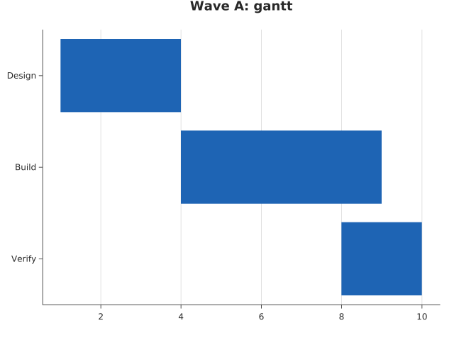
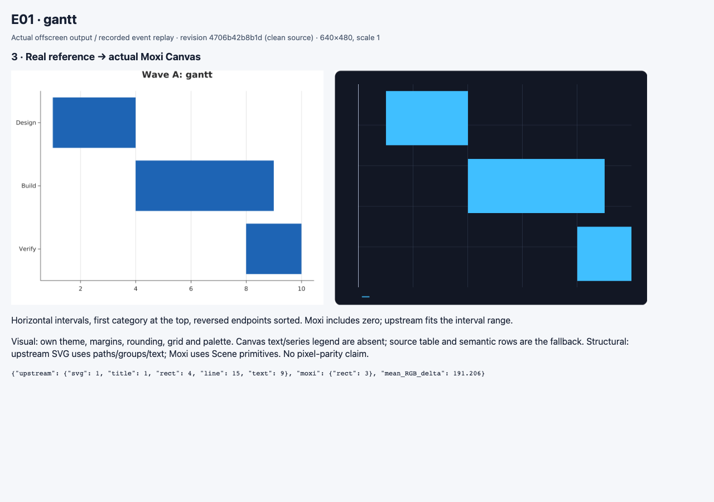
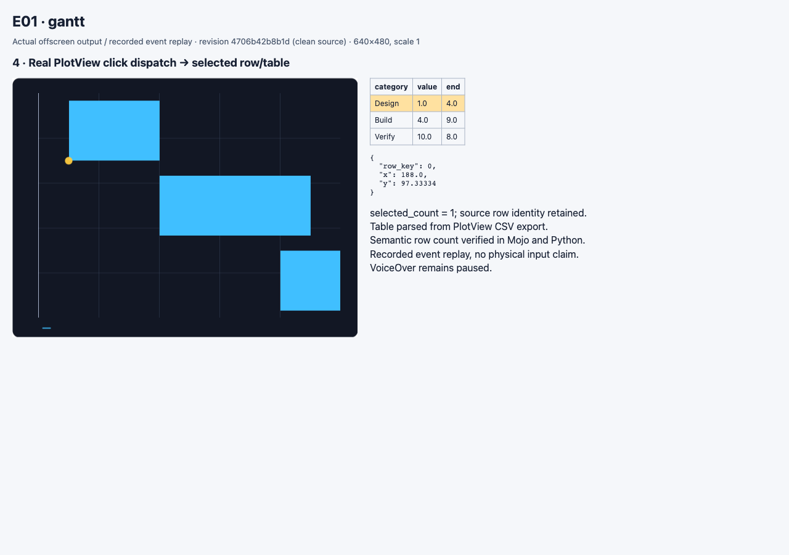
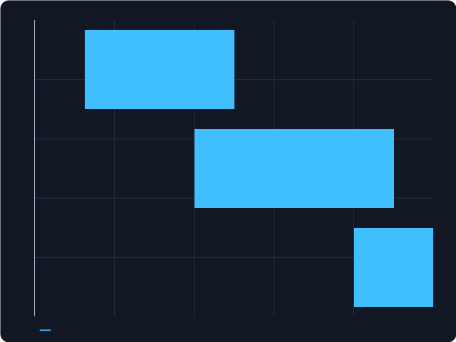
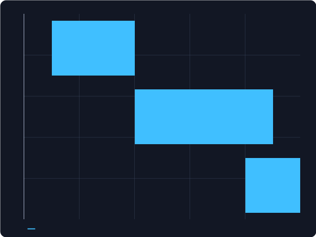

Source columns and specialized v1 schema Action: Open source.html Expected: Source categories and all shape channels visible
initial · browser · 1280 × 900 pixels

Real dataviz v0.8.0 output Action: Run upstream.py against exact pin Expected: Actual pinned PNG, no substituted image
initial · offscreen-render · 640 × 480 pixels

Actual Moxi and classified differences Action: Open comparison.html Expected: Upstream and actual Scene/Canvas output side by side
result · browser · 1280 × 900 pixels

Selection and source table: event replay Action: Runner dispatches click at recorded coordinates; open selection.html Expected: One source row selected with semantic/CSV fallback
interaction · browser · 1280 × 900 pixels

Export/update: first-row numeric data ×1.25 Action: Verify.py exports SVG/Canvas; PlotView.replace_data with first-row numeric columns multiplied except total flags Expected: Recompiled actual Canvas output; selection clears
result · offscreen-render · 640 × 480 pixels

Restore original source snapshot Action: PlotView.replace_data(original) Expected: Original bounds restored after update
recovery · offscreen-render · 640 × 480 pixels
Contact sheetReproduce
See docs/plot-specialized-wave-a.md: reproduce both pinned runners, evidence.py, then capture source.html, comparison.html, selection.html through collaborative preview at 1280x900. Copy saved PNGs to 01-source.png, 03-comparison.png, 04-selection.png. Run scripts/wave_a/slideshows.py (shared validator/renderer). Captures record the source revision and scoped hashes; rerun after source changes.
Horizontal intervals, first category at the top, reversed endpoints sorted. Moxi includes zero; upstream fits the interval range. Offscreen rendering and recorded event replay; no physical performance or human usability claim.
Screenshots show recorded states. They do not establish latency, scientific accuracy, physical IME, screen-reader behavior, or human usability.